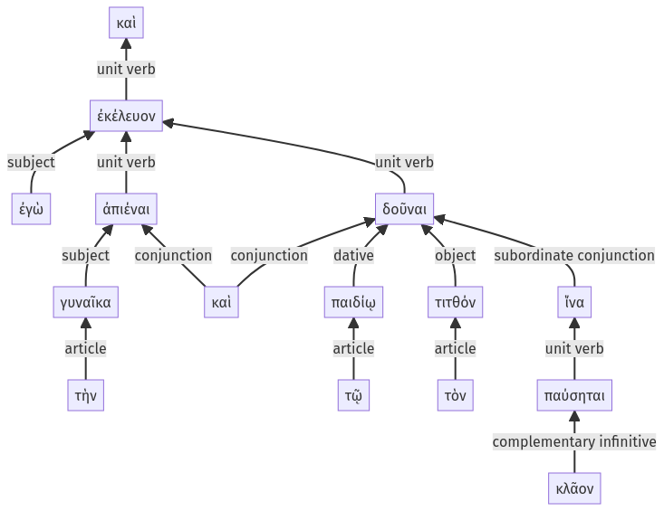

Lysias, 1.12.5-1.12.19a
1.12.1-1.12.4a | 1.12.20-1.12.34a
Sentence 25
1.12.5-1.12.19a
καὶ ἐγὼ τὴν γυναῖκα ἀπιέναι ἐκέλευον καὶ δοῦναι τῷ παιδίῳ τὸν τιτθόν, ἵνα παύσηται κλᾶον.
1 ἐγὼ
2 τὴν γυναῖκα ἀπιέναι
1 ἐκέλευον
2 καὶ δοῦναι τῷ παιδίῳ τὸν τιτθόν
3 ἵνα παύσηται κλᾶον
καὶ ἐγὼ τὴν γυναῖκα ἀπιέναι ἐκέλευον καὶ δοῦναι τῷ παιδίῳ τὸν τιτθόν, ἵνα παύσηται κλᾶον.
Highlighting:
- connecting words
- unit verb
- subject
- object
Color code:
- Independent clause (level 1, transitive verb)
- indirect statement with infinitive (level 2, intransitive verb)
- indirect statement with infinitive (level 2, transitive verb)
- subordinate clause (level 3, transitive verb)
